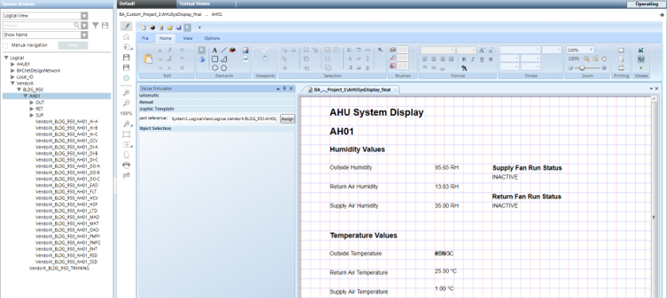

Test the Graphic Template
You can test the graphic template by dragging a data point instance from System Browser, into the Value Simulator.

- The graphic template is open in the work area of the Graphic Editor.
- From the Home tab, in the Modes group, click Test mode
 .
. - From the Value Simulator view, expand the Automatic section, and check the Run Value Simulator check box.
- Expand the Graphic Template section.
- From System Browser, navigate to your data point and drag the data point onto the Value Simulator, onto the Object Reference field.
- Click Assign.
- Any elements that have evaluations associated with them, now display the COV values of the data point instance.